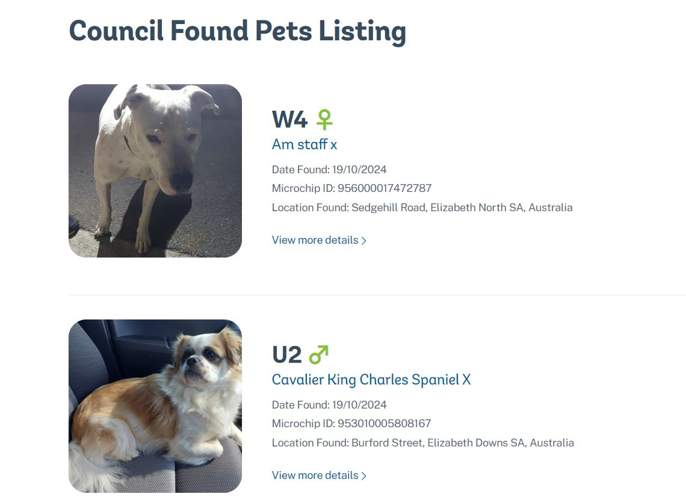
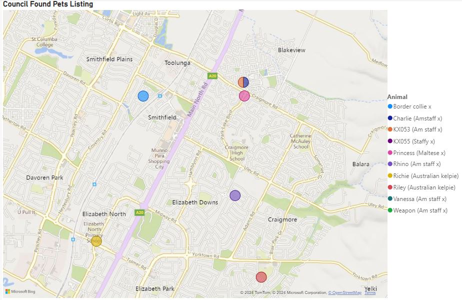
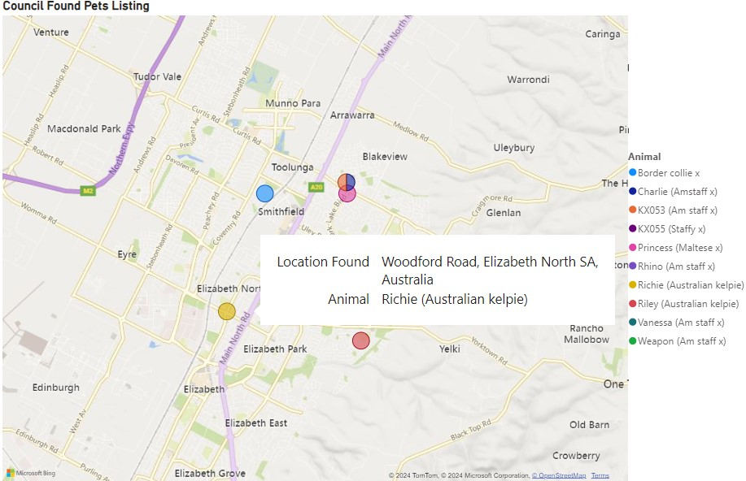
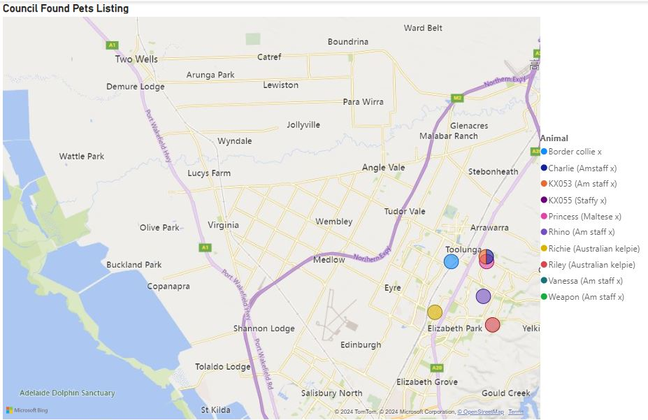

The data presented here is sourced from the Animal Welfare League's (AWL) Council Found Pets Listing. I began by compiling the lost pets data into an Excel file, then utilized data visualization techniques to map the locations of found animals.
This visualization effectively aids in tracking where lost animals are located, significantly improving rescue efforts. It also helps identify areas with a high concentration of lost animals, allowing for deeper investigation into potential causes.
By applying advanced data visualization strategies, this project provides a clear and structured view of the geographical distribution of lost pets. It serves as a tool for animal rescue teams and welfare organizations to better understand trends and focus their resources efficiently.
This map shows the geographical locations of lost pets based on the data collected. Each point on the map represents a lost animal found in a specific area, providing a clear visual reference to assist rescue teams.
This is an interactive map where hovering over a specific point reveals additional details about the lost pet, including the animal’s breed, date found, microchip ID, and exact location. This feature enhances the clarity and accessibility of the data.
The map is fully scalable, allowing zooming in and out to focus on different areas. Additionally, if more data becomes available, new animals can be added, and the map can be filtered and categorized for more comprehensive visual representation.
